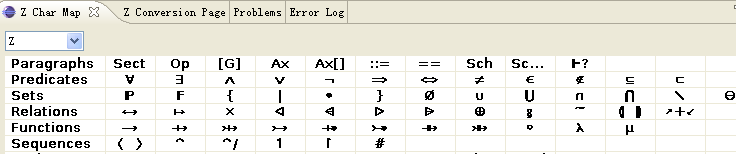
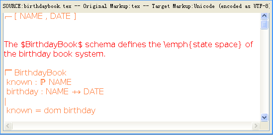
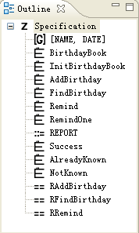

In addition to the CZT Editor, the CZT editor plug-in provides a set of views.
Z Character Map

This view provides users a pallette of Unicode character, including Z-specific characters, useful for writing Z specifications, particularly Using Unicode markup.
Users can insert a Z character or construct into the active editor by clicking on a character in the panel.
The actual text inserted follow the logic below:
If the active editor is not a CZT Editor, the description of the selected Z character is inserted in the editor.
If the specification is in LaTeX markup (the name of the specification file has the extension ¡°.tex¡±), then the actual text inserted in the active editor is the LaTeX representation of the selected Z character.
If the specification is in Unicode markup (the name of the specification file has the extension of either ¡°.utf8¡± or ¡°utf16¡±), then the Unicode representation of the selected Z character is inserted into the active editor.
Z Conversion

This view is used to receive the contents converted from the specification in the editor. It also support syntax coloring using the same rule as the editor.
Outline

The view provides the overview of the Z specification in the active CZT editor. If enabled, the selection in the editor can synchronize with the selection in the Outline view.